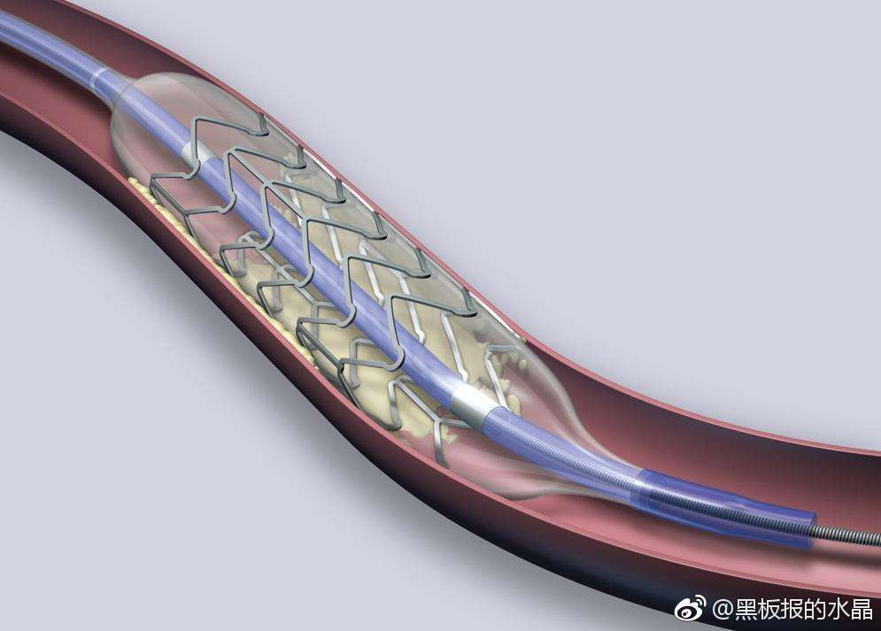

@黑板报的水晶:
【20190131】在武汉天河T3转机，被热干面馋到了，坐下来吃一碗。隔壁桌一个穿粉色毛衣的女人，带着耳机一直在打业务电话。先是抱怨公司OA系统改流程，一个发货要批8道程序、然而详述近期如何在新来的丁总面前和其他同事斗法，后面开始讲到重点：他们是个医疗器械公司，最近有一批心脏支架出了问题、代理商反映完全不能用（1000多条，货值600多万），公司内部正在为这事扯皮，某领导建议用新的产品替代，财务领导不同意，说毕竟是600多万的货值，建议先只换上海区域的，其他地方暂时不换、让代理商继续卖着。
她大概姓李，是销售经理这个方向的，在跟电话对面的同事商量怎么给建议但又不得罪各方领导。
那通电话大概拉拉杂杂有半小时之久，从飞机一再误点说到去安徽区域时那边的经理怎么懂事、张罗给她带点心，还有很多其他杂事，但是完全没有任何一点关于不合格的心脏支架继续用在病人身上会有什么问题。始终神色怡然，像是在谈一批衣服的拉链坏了但不想换货那么简单轻松。
我一直以为“心脏支架”可能是个硬硬的小木架那种，回来上网查了下，确实是软软细细的一条，周围有纤维可以膨起来那种。所以她用“条”这个单位。
一千多条支架，要收走多少条人命？
因为要登机了，没办法继续跟着她听下去、判断出是哪个厂家。但要装心脏支架的病人，还是当心一点这种情况吧。
我现在有点明白过期疫苗那一类的事为什么会发生了，因为恶，就在很多很多这些看似普通的人身上。
她大概姓李，是销售经理这个方向的，在跟电话对面的同事商量怎么给建议但又不得罪各方领导。
那通电话大概拉拉杂杂有半小时之久，从飞机一再误点说到去安徽区域时那边的经理怎么懂事、张罗给她带点心，还有很多其他杂事，但是完全没有任何一点关于不合格的心脏支架继续用在病人身上会有什么问题。始终神色怡然，像是在谈一批衣服的拉链坏了但不想换货那么简单轻松。
我一直以为“心脏支架”可能是个硬硬的小木架那种，回来上网查了下，确实是软软细细的一条，周围有纤维可以膨起来那种。所以她用“条”这个单位。
一千多条支架，要收走多少条人命？
因为要登机了，没办法继续跟着她听下去、判断出是哪个厂家。但要装心脏支架的病人，还是当心一点这种情况吧。
我现在有点明白过期疫苗那一类的事为什么会发生了，因为恶，就在很多很多这些看似普通的人身上。
- 